토목산업기사 (2006-09-10 기출문제)
1과목: 응용역학
1. 다음 그림의 캔틸레버보에서 최대 휨모멘트는 얼마인가?
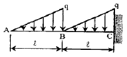
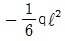
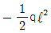
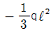
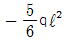
(정답률: 50%)

2. 아래 그림과 같은 단순보에서 C점의 처짐은?
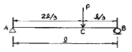
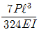
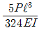
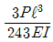
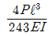
(정답률: 알수없음)
3. 경간(Span) 10m 인 단순보에 아래 그림과 같은 하중이 작용할 때 최대 휨응력은? (단, 자중은 무시한다.)
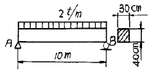
- 312.5 kg/cm2
- 615.9 kg/cm2
- 43.1 kg/cm2
- 22.6 kg/cm2
(정답률: 알수없음)
4. 다음 그림과 같은 보에서 A지점의 반력은?
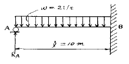
- 6.0t
- 7.5t
- 8.0t
- 9.5t
(정답률: 알수없음)
5. 그림의 직사각형 ABCD는 기둥의 단면이다. 이 단면의 핵(kernel, core)을 EFGH라고 할 때 FH/BC 의 값은?
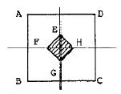
- 1/6
- 1/2
- 1/3
- 1/4
(정답률: 알수없음)
6. 다음과 같은 구조물은 몇 차 부정정 구조물인가?
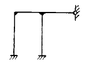
- 3
- 4
- 5
- 6
(정답률: 알수없음)
7. 다음 단순보의 지점 A에서의 처짐각 θA는 얼마인가? (단, EI는 일정하다.)
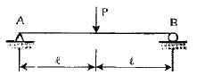
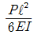
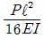
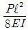
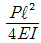
(정답률: 알수없음)
8. 그림에서 나타낸 구조물에서 A점의 휨모멘트는?
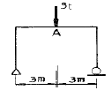
- 3 tㆍm
- 4.5 tㆍm
- 6 tㆍm
- 7.5 tㆍm
(정답률: 알수없음)
9. 지름 D, 길이 ℓ인 원형 기둥의 세장비는?
- 4ℓ / D
- 8ℓ / D
- 4D / ℓ
- 8D / ℓ
(정답률: 알수없음)
10. 다음 장주의 단면, 길이, 하중이 같을 때 가장 강한 기둥은?
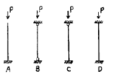
- A
- B
- C
- D
(정답률: 알수없음)
11. 그림과 같은 단순보에서 최대 휨모멘트는?
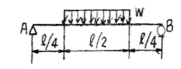
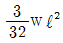
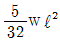
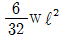
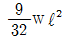
(정답률: 알수없음)
12. 그림과 같은 단면의 도심거리 Y를 구한 값으로 옳은 것은?
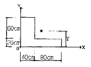
- 50cm
- 40cm
- 30cm
- 20cm
(정답률: 알수없음)
13. 지름이 4cm인 원형 강봉을 10t의 힘으로 잡아 당겼을 때 소성은 얼어나지 않았고 탄성변형에 의해 길이가 1mm증가 하였다. 강봉에 축척된 탄성 변형에너지는 얼마인가?
- 1.0t.mm
- 5.0t.mm
- 10.0 t.mm
- 20.0t.mm
(정답률: 알수없음)
14. 그림과 같은 역계에서 합력R의 위치 x의 값은?
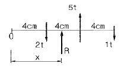
- 6cm
- 8cm
- 10cm
- 12cm
(정답률: 알수없음)
15. 다음 그림에서 x-x축에 대한 단면 2차 반지름 (γx)은 몇 m인가?
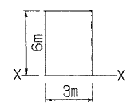
- 1.73
- 2.46
- 2.73
- 3.46
(정답률: 알수없음)
16. 그림과 같이 부재의 자유단이 옆의 벽과 1mm떨어져 있다. 부재의 온도가 현재보다 20℃ 상승할 때, 부재 내에 생기는 열응력의 크기는? (단, E=20,000 kg/cm2, α=10-5/℃이다.)
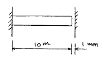
- 1 kg/cm2
- 2 kg/cm2
- 3 kg/cm2
- 4 kg/cm2
(정답률: 알수없음)
17. 길이 8m의 강봉에 인장력 15t을 가했을 때 강봉의 늘음량이 0.2cm 였다면 이때 강봉의 지름은? (단, 탄성계수는 2.1×106 kg/cm2이다.)
- 42.6mm
- 51.3mm
- 60.3mm
- 69.7mm
(정답률: 알수없음)
18. 정정 구조물에 비해 부정정 구조물이 갖는 장점을 설명한 것 중 틀린 것은?
- 설계모멘트의 감소로 부재가 절약된다.
- 지점침하 등으로 인해 발생하는 응력이 적다.
- 외관이 우아하고 아름답다.
- 부정정구조물은 그 연속성 때문에 처짐의 크기가 작다.
(정답률: 알수없음)
19. 그림의 내민보에서 C단에 힘 P=2400kg의 하중이 150°의 경사로 작용하고 있다. A단의 연직반력(Ra)을 0(零)으로 하려면 AB구간에 작용될 등분포하중 W의 크기는?
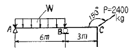
- 200 kg/m
- 224.42kg/m
- 300 kg/m
- 346.41kg/m
(정답률: 알수없음)
20. 아래 그림에서 P1 과 P2 의 크기는?
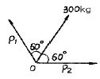
- P1 = P2 = 100 kg
- P1 = P2 = 150 kg
- P1 = P2 = 300 kg
- P1 = P2 = 600 kg
(정답률: 알수없음)
2과목: 측량학
21. 직접고저측량을 하여 그림과 같은 결과를 얻었다. 이 때 B점의 표고는? (단, A점의 표고는 100m 이고 단위는 [m]이다.)
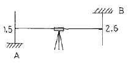
- 101.1m
- 101.5m
- 104.1m
- 1⑤.2m
(정답률: 알수없음)
22. 매개변수 A 가 60m인 클로소이드 곡선상의 시점에서 곡선길이(L)이 30m일 때 곡선의 반지름(R)은?
- 60m
- 120m
- 90m
- 150m
(정답률: 알수없음)
23. 항공사진은 다음 어떤 원리에 의한 지형지물의 상인가?
- 정사투영
- 평행투영
- 등적투영
- 중심투영
(정답률: 알수없음)
24. 고속도로의 노선설계에 많이 이용되는 완화곡선은?
- 클로소이드곡선
- 3차 포물선
- 렘니스케이트곡선
- 반파장 Sine 곡선
(정답률: 알수없음)
25. 다각측량에서 측선 AB의 거리가 2068m이고 A점에서 20″의 각관측오차가 발생하였을 때 B점에서의 거리오차는?
- 0.1m
- 0.2m
- 0.3m
- 0.4m
(정답률: 알수없음)
26. 수준 측량에서 전ㆍ후시 시준거리를 같게 하여 소거할 수 있는 기계오차로 가장 적합한 것은?
- 거리의 부등에서 생기는 시준선의 대기 중 굴절에 서 생긴 오차
- 기포관축과 시준선이 평행하지 않기 때문에 생긴 오차
- 기포관축이 기계의 연직축에 수직하지 않기 때문에 생긴 오차
- 지구의 곡률에 의해서 생긴 오차
(정답률: 알수없음)
27. 삼각형 면적을 계산하기 위해 변길이를 관측한 결과가 그림과 같을 때 이 삼각형의 면적은?
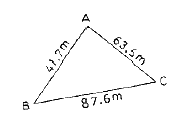
- 1,072.7m2
- 1,126.2m2
- 1,235.6m2
- 1,357.9m2
(정답률: 알수없음)
28. 평면직교좌표에서 동서거리로 표시하는 것은?
- X 좌표
- Y좌표
- 경도(D)
- 위도(L)
(정답률: 알수없음)
29. 등고선에서 등고선 간의 최단거리 방향은 그 지형의 무엇을 표시하는 것인가?
- 하향경사를 표시한다.
- 상향경사를 표시한다.
- 최대경사방향을 표시한다.
- 최소경사방향을 표시한다.
(정답률: 알수없음)
30. 다음 삼각망의 구성에 대한 설명 중 잘못된 것은?
- 지역전체를 고른 밀도로 덮는다.
- 기선의 확대회수는 10회로 한다.
- 삼각형은 가능한 정삼각형에 가깝게 한다.
- 변길이 오차의 누적을 피하기 위해 검기선을 설치 한다.
(정답률: 알수없음)
31. 100m2의 정사각형 토지면적을 0.1m2까지 정확하게 구하기 위하여 필요하고도 충분한 한 변의 측정거리는 다음 중 몇 mm 까지 측정하여야 하겠는가?
- 1mm
- 3mm
- 5mm
- 7mm
(정답률: 알수없음)
32. 기초터파기 공사를 하기 위해 가로, 세로, 깊이를 스틸테이프로 측량하여 다음과 같은 결과를 얻었다. 토공량과 여기에 포함된 오차는? (단, 가로 40m±0.⑤m, 세로 20m±0.03m, 깊이 15m±0.02m)
- 6,000±28.3m3
- 6,000±48.9m3
- 6,000±28.4m3
- 12,000±48.9m3
(정답률: 알수없음)
33. 완화곡선설치에 관한 설명으로 옳지 않은 것은?
- 완화곡선의 반지름은 무한대로부터 시작하여 점차 감소되고 소요의 원곡선에 연결된다.
- 완화곡선의 접선은 시점에서 직선에 접하고 종점에서 원호에 접한다.
- 완화곡선의 시점에서 칸트는 0이고 소요의 곡선점에 도달하면 어느 높이에 달하고 그 사이의 변화비는 일정하다.
- 완화곡선의 곡률은 곡선의 어느 부분에서도 그 값이 같다.
(정답률: 알수없음)
34. 축척 1 : 25,000 지역의 지형도 1매를 1 : 5,000 축척으로 재편집하고자 할 때 몇 매의 지형도가 나오는가?
- 5매
- 10매
- 15매
- 25매
(정답률: 60%)
35. 사면(斜面)거리 50m를 측정하는데 그 보정량이 1mm이라면 그 경사도(傾斜度)는 약 얼마인가?
- 1/100
- 1/130
- 1/160
- 1/190
(정답률: 알수없음)
36. 하천 측량에서 유속을 구하고자 수면으로부터 수심(H)의 0.2H, 0.6H, 0.8H 되는 지점의 속도를 측정하여 각각 0.72m/sec, 0.67m/sec, 0.69m/sec의 결과를 얻었다. 3점법에 의한 평균유속은?
- 0.73m/sec
- 0.71m/sec
- 0.69m/sec
- 0.67m/sec
(정답률: 알수없음)
37. 축척 1/500의 평판측량에서 제도허용 오차가 0.2mm일 때 구심하는 경우 가장 올바르게 표현된 것은?
- 오차가 허용되지 않으므로 말뚝중앙에 정확히 맞추어야 한다.
- 말뚝중앙에서 10cm까지 오차가 허용된다.
- 말뚝중앙에서 5cm까지 오차가 허용된다.
- 말뚝이 평판 밑에 있으면 된다.
(정답률: 알수없음)
38. 사진의 중심점을 찾으려면 다음 어느 것을 이용하는가?
- 화면거리
- 사진번호
- 사진의 크기
- 사진지표
(정답률: 알수없음)
39. 그림에서 AC및 DB간에 그림과 같이 곡선을 넣으려 할 때 교점(P)에 장애물이 있어 ∠ACD = 150°, ∠CDB = 90°및 CD의 거리 400m를 측정하였다. C점으로부터 A(B,C)점까지의 거리는? (단, 곡선의 반지름은 500m로 한다.)
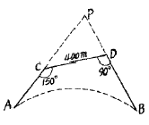
- 461.88m
- 453.15m
- 425.88m
- 404.15m
(정답률: 알수없음)
40. 아래 그림과 같은 3개의 각 x1, x2, x3를 같은 정도로 측정한 결과, x1=31° 38′ 18″, x2 = 33° 04′ 31″, x3 = 64° 42′ 34″로 나타났다. ∠AOB의 보정된 값은?
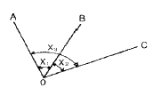
- 31° 38′ 23″
- 31° 38′ 20″
- 31° 38′ 13″
- 31° 38′ 08″
(정답률: 알수없음)
3과목: 수리학
41. 비중 0.92의 빙산이 비중 1.025의 해수면에 떠있다. 수면에서 위에 나온 빙산의 체적이 100m3 이라면 빙산 전체의 체적은?
- 1.464m3
- 1.363m3
- 976m3
- 876m3
(정답률: 알수없음)
42. 정상적인 흐름 내의 한 개 유선에서 동수경사선은 다음 중 어느 값을 연결한 선의 기울기인가? (단, v = 유속, g = 중력가속도, wo = 물의 단위중량, P = 압력, Z = 위치수두)
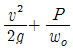
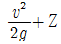
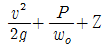
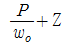
(정답률: 알수없음)
43. 원관내 흐름이 포물선형 유속분포를 가질 때 관중심선상에서의 유속을 Vo, 전단응력 τ0, 관 벽면에서의 전단응력 τs, 관내의 평균유속을 Vm, 관 중심선에서 y만큼 떨어져 있는 곳의 유속을 V라 할 때 다음 중 틀린 것은?
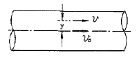
- Vo ＞ V
- Vo = 3Vm
- τ0 = 0
- τs ＞ τ0
(정답률: 알수없음)
44. 수면으로부터 2.5m 깊이에 정사각형 단면의 오리피스를 설치하여 0.042m3/sec의 물을 유출시킬 때 정사각형 단면의 한 변의 길이는? (단, 오리피스 계수 C=0.6)
- 10cm
- 16cm
- 20cm
- 22cm
(정답률: 알수없음)
45. 길이가 400m이고 지름이 25cm인 관에 평균유속 1.82m/sec로 물이 흐르고 있다. 관 마찰 손실계수 f=0.0422일 때 손실 수두는?
- 11.4m
- 25.4m
- 30.0m
- 46.0m
(정답률: 알수없음)
46. 다음 중 다르시(Darcy)법칙에 관한 사항 중 옳은 것은? (여기서, v : 평균유속, h : 수두, dh : 수두차, ds : 흐름의 길이, k : 투수계수)
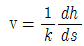
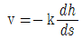
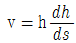
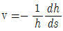
(정답률: 58%)
47. 강우량-유역면적-강우지속 기간 관계를 수립하는 작업을 무엇이라 하는가?
- ø-index
- W-index
- DAD해석
- 유출 해석
(정답률: 알수없음)
48. 개수로에서 수심 h=1.2m이고, 평균유속 V= 4.54m/sec인 흐름의 비에너지(Specific energy)는?
- 1.25m
- 2.25m
- 2.75m
- 3.25m
(정답률: 34%)
49. 다음 중 유역의 평균강우량 산정법이 아닌 것은?
- 산술평균법
- Thiessen의 가중법
- 등우선법
- Penman 공식법
(정답률: 알수없음)
50. 다음 그림과 같은 원형관에 물이 흐를 경우 1, 2, 3 단면에 대한 설명으로 옳은 것은? (단, D1=30cm, D2=10cm, D3=20cm)
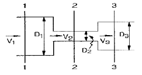
- 유속은 V2 ＞ V3 ＞ V1 이 되며 압력은 1단면 ＞ 3단면 ＞ 2단면이다.
- 유속은 V1 ＞ V3 ＞ V2 이 되며 압력은 2단면 ＞ 3단면 ＞ 1단면이다.
- 유속은 V2 ＜ V3 ＜ V1 이 되며 압력은 3단면 ＞ 1단면 ＞ 2단면이다.
- 1, 2, 3단면의 유속과 압력은 같다.
(정답률: 알수없음)
51. 그림의 평판에 작용하는 전수압의 연직 분력(Pv)은? (단, 평판의 폭인 Z축 방향의 길이는 5m임)
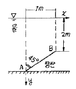
- 2.0 ton
- 10.1 ton
- 12.5 ton
- 17.7 ton
(정답률: 알수없음)
52. Froude수가 갖는 의미로 옳은 것은?
- 점성력과 관성력의 비
- 관성력과 표면장력의 비
- 중력과 점성력의 비
- 관성력과 중력의 비
(정답률: 알수없음)
53. 다음과 같은 집중호우가 자기기록지에 기록되었다. 지속기간 20분 동안의 최대 강우강도를 구한 값은?
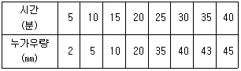
- 35mm / hr
- 75mm / hr
- 95mm / hr
- 1⑤mm / hr
(정답률: 알수없음)
54. 다음 중 하천 유량 측정 방법이 아닌 것은?
- 위어(weir)에 의한 방법
- 벤튜리 메타(venturi meter)에 의한 방법
- 유속계에 의한 방법
- 부자에 의한 방법
(정답률: 알수없음)
55. 그림과 같이 물을 채운 용기에서 D점의 절대압력은? (단, 대기압 = 1.033kg / cm2)
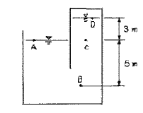
- 2.066 kg / cm2
- 1.233 kg / m2
- 1.033 kg / cm2
- 0.733 kg / cm2
(정답률: 알수없음)
56. 수표면적이 200ha인 저수지에서 24시간 동안 측정된 증발량은 2cm이며 이 기간 동안 평균 2m3/s 의 유량이 저수지로 유입된다. 24시간 경과 후 저수지의 수위가 초기 수위와 동일 할 경우 저수지로부터의 유출량은 얼마인가? (단, 저수지의 수표면적은 수심에 따라 변화하지 않음)
- 1,328ha ㆍ cm
- 1,728ha ㆍ cm
- 2,160ha ㆍ cm
- 2,592ha ㆍ cm
(정답률: 알수없음)
57. 용기에 물을 넣고 a=9.8m/sec2의 가속도로 윗 방향으로 운동시킬 때 A점에서의 정수압은?
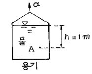
- 1 ton/m2
- 2 ton/m2
- 10 ton/m2
- 20 ton/m2
(정답률: 알수없음)
58. 다음 중 위어(weir)의 설치 목적이 아닌 것은?
- 유량측정
- 취수를 위한 수위증가
- 분수(分水)
- 수압측정
(정답률: 알수없음)
59. 부체가 수면에 의해 절단되는 부양면으로부터 부체의 최하단부까지의 깊이를 무엇이라 하는가?
- 부력
- 부심
- 부양면
- 흘수
(정답률: 알수없음)
60. 차원방정식 [LMT]계를 [LFT]계로 고치고자 할 때 이용되는 식으로 옳은 것은?
- [M] = [FLT]
- [M] = [FL-1T-2]
- [M] = [FLT2]
- [M] = [FL2T]
(정답률: 알수없음)
4과목: 철근콘크리트 및 강구조
61. 그림과 같이 지간 중앙점에서 강선을 꺾었을 때 이 중앙점에서 상향력 U의 값은?
- 2Fsinθ
- 4Fsinθ
- 2Ftanθ
- 4Ftanθ
(정답률: 알수없음)
62. PSC 부재에서 프리스트레이스(prestress)의 직접적인 감소 원인이 아닌 것은?
- 콘크리트의 탄성 변형
- 마찰 및 정착단 활동
- 콘크리트의 건조수축 및 크리프(creep)
- PS 강재의 편심량
(정답률: 알수없음)
63. 독립 확대 기초의 크기가 2×3m이고 지반의 허용지지력이 200kN/m2일 때 이 기초가 받을 수 있는 허용하중의 크기는?
- 600 kN
- 800 kN
- 1,200 kN
- 1,500 kN
(정답률: 알수없음)
64. As' = 1,400mm2로 배근된 그림과 같은 복철근 보의 탄성처짐이 10mm라 할 때 1년 후 장기처짐을 고려한 총처짐량은? (단, 1년 후 지속하중 재하에 따른 계수 ζ=1.4 이다.)
- 10mm
- 13.25mm
- 16.43mm
- 18.24mm
(정답률: 알수없음)
65. 강판(150 × 10mm)을 그림과 같이 ø22mm 리벳(rivet)으로 연결할 때 강판의 최대 허용인장력은? (단, fta=120MPa)
- 115 kN
- 120 kN
- 125 kN
- 130 kN
(정답률: 알수없음)
66. 다음 중 최소 전단철근 규정이 적용되는 경우는?
- 슬래브와 기초판
- 콘크리트 장선구조
- 전체 높이가 250mm를 초과하는 휨부재
- T형보에 있어서 그 높이가 플랜지 두께의 2.5배 또는 복부폭의 1/2중 큰 값 이하인 보
(정답률: 알수없음)
67. 다음과 같은 대칭 T형보의 유효폭(b)을 산정할 때 필요한 공식의 종류에 포함되지 않는 것은?
- 16t + bw
- 슬래브의 중심간 거리
- 보의 경간의 1/4
- (인접보와의 내측거리의 1/2) + bw
(정답률: 알수없음)
68. 옹벽의 일반적 설계에 관한 다음 설명 중 틀린 것은?
- 뒷부벽은 T형보로 설계하여야 하며, 앞부벽은 직사각형보로 설계하여야 한다.
- 캔틸레버 옹벽의 전면벽은 저판에 지지된 캔틸레버로 설계할 수 있다.
- 뒷부벽식 및 앞부벽식 옹벽의 전면벽은 1방향 슬래브로 설계하여야 한다.
- 캔틸레버식 옹벽의 저판은 전면벽과의 접합부를 고정단으로 간주한 캔틸레버로 가정하여 단면을 설계할 수 있다.
(정답률: 알수없음)
69. 그림과 같은 단면을 갖는 지간 20m의 PCS보에 PS 강재가 150mm의 편심거리를 가지고 직선배치 되어 있다. 자중을 포함한 등분포하중 8kN/m가 보에 작용할 때, 보 중앙단면 콘크리트 상연응력을 계산하면? (단, 유효 프리스트레스 힘 Pe=1,800kN)
- 9.13MPa
- 10.84MPa
- 12.92MPa
- 14.12MPa
(정답률: 알수없음)
70. 콘크리트의 크리프에 대한 다음 기술 중 적당하지 않은 것은?
- 콘크리트의 설계 기준강도가 크면 클수록 크리프양도 크다.
- 크리프가 진행되는 속도는 습도의 영향을 받는다.
- 크리프 양은 응력이 크면 클수록 응력의 지속시간이 길면 길수록 크다.
- 최초로 하중이 재하될 때 재령이 크면 클수록 크리프양은 적어진다.
(정답률: 40%)
71. 강도설계법에서 전단과 휨만을 받는 부재에 콘크리트가 부담하는 공칭전단 강도(Vc)는 얼마인가? (단, fck=21MPa ,fy=300MPa, bw=300㎜, d=500㎜)
- 114.6kn
- 35.7kn
- 150.2kn
- 95.5kn
(정답률: 알수없음)
72. 강도해석에서 fck=30MPa일때 응력도의 높이 비 β1은 얼마인가?
- β1=0.85
- β1=0.843
- β1=0.836
- β1=0.829
(정답률: 알수없음)
73. 콘크리트의 균열에 대한 다음 설명중 틀린 것은?
- 이형철근을 사용하면 균열폭이 작아진다.
- 하중으로 인해 발생하는 균열의 최대폭은 철근응력에 비례한다.
- 콘크리트 표면의 균열 폭은 콘크리트 피복두계에 반비례한다.
- 철근을 인장측 콘크리트에 잘 분포시키면 휨균열의 폭이 최소로 된다.
(정답률: 알수없음)
74. 인장을 받는 이형철근의 기본정착길이 ℓdb 를 계산하기 위해 필요한 요소가 아닌것은?
- 철근의 공칭지름
- 철근의 설계기준항복강도
- 전단철근의 간격
- 콘크리트의 설계기준강도
(정답률: 알수없음)
75. 아래 그림의 복철근 직사각형 보에서 등가 응력 높이 a는? (단, fck=21MPa, fy=300MPa)
- 60.2㎜
- 148.2㎜
- 156.5㎜
- 216.7㎜
(정답률: 알수없음)
76. 강재의 압축부재에 대한 설명으로 옳은 것은?
- 축방향 압축강도(Pc)의 단면계산에서 리벳이나 볼트구멍을 제외한 순단면적을 사용한다.
- 축방향 압축강도(Pc)의 단면계산에서 총단면적을 사용한다.
- 축방향 압축강도(Pc)의 계산에서 응력은 휨응력만 계산 한다.
- 압축부재가 길이에 비해 단면이 작으면 세장비가 작아 져서 좌굴파괴를 일으킨다.
(정답률: 알수없음)
77. 그림과 같은 T형보에 대한 등가깊이 a는 얼마인가? (단, fck=21MPa , fy=400MPa이다)
- 40㎜
- 70㎜
- 80㎜
- 150㎜
(정답률: 알수없음)
78. b = 300㎜ d = 500㎜인 직사각형보에 하중계수를 고려한 계수 전단력 80kN이작용하고 fck=21MPa, fy=400MPa이라면 필요한 최소 전단철근량은 약 얼마인가? (단, 전단철근은 수직스터럽을 사용하며 간격은 250㎜)
- 65.7mm2
- 220.3mm2
- 170.5mm2
- 필요없음
(정답률: 알수없음)
79. 보의 주철근을 둘러싸고 이에 직각되게 또는 경사지게 배치한 복부보강근으로서 전단력 및 비틀림모멘트에 저항 하도록 배치한 보강철근은?
- 배력철근
- 스터럽(Stirrup)
- 조립용 철근
- 절곡철근
(정답률: 알수없음)
80. 강도설계법에서 직사각형 단철근보의 균형철근비 pb는? (단, fck=20MPa, fy=300MPa 이다.)
- 0.032
- 0.035
- 0.038
- 0.048
(정답률: 알수없음)
5과목: 토질 및 기초
81. 다음 sounding의 종류 가운데 시험기의 회전에 의해서만 지반의 강도를 측정하는 방법은?
- 표준관입시험(SPT)
- 콘관입시험(CPT)
- Vane Test
- Iskymeter
(정답률: 알수없음)
82. 다짐에 관한 다음의 설명중 타당하지 않은 것은?
- 사질성분이 많이 내포된 흙은 다짐곡선의 기울기가 급하다.
- 최적 함수비는 흙의 종류와 다짐방법에 따라 다르다.
- 입도분포가 양호한 흙의 건조밀도는 낮다.
- 다짐을 하면 부착성이 양호해지고 투수성과 압축성이 작아진다.
(정답률: 알수없음)
83. 그림의 옹벽이 받는 전 주동 토압은? (단,Rankine의 토압이론으로 계산할 것)
- 1.5t/m
- 3.0t/m
- 4.15t/m
- 8.33t/m
(정답률: 알수없음)
84. 연약점토 지반에 성토할 때 다음 공법 중 이용도가 가장 낮은 것은?
- Paper-drain공법
- Pre-loading공법
- Sand-drain공법
- Soil-Cement공법
(정답률: 알수없음)
85. 비교적 균질한 토층을 실험한 결과 rt=2.0t/m3, C=2.5t/m2, ø=10° 인 경우에 연직으로 절취할 수 있는 한계고는 얼마인가?
- Hc=5.96m
- Hc=5.11m
- Hc=6.48m
- Hc=4.71m
(정답률: 알수없음)
86. Terzaghi의 지지력 공식에서 고려되지 않는 것은?
- 흙의 내부 마찰각
- 기초의 근입깊이
- 압밀량
- 기초의 폭
(정답률: 알수없음)
87. 다음 표준관입시험에 관한 설명으로 옳지 않은 것은?
- 시험결과 N값을 얻는다.
- 63.5㎏ 햄머를 76㎝ 낙하시켜 Split spoon Sampler를 30㎝ 관입시킨다.
- 시험결과로부터 흙의 내부마찰각 등의 공학적 성질을 추정할 수 있다.
- 이 시험은 사질토에서 보다 점성토에서 더 유리하게 이용된다.
(정답률: 알수없음)
88. 점착력이 큰 지반에 강성의 기초가 놓여 있을 때 기초바닥의 응력상태를 설명한 것 중 옳은 것은?
- 기초 밑 전체가 일정하다.
- 기초 중앙에서 최대응력이 발생한다.
- 기초 모서리 부분에서 최대응력이 발생한다.
- 점착력으로 인해 기초바닥에 응력이 발생하지 않는다.
(정답률: 알수없음)
89. 그림에서 모래층에 분사현상이 발생되는 경우는 수두 h가 몇 ㎝이상일때 일어나는가? (단, Gs=2.68, n=60%)
- 20.16㎝
- 10.52㎝
- 13.73㎝
- 18.⑤㎝
(정답률: 알수없음)
90. 현장에서 채취한 흙 시료의 교란된 정도를 알기 위하여 시료 채취에 사용한 원통형 튜브(tube)의 규격을 조사한결과 튜브의 외경이 5㎝이고 절단면의 내경은 4.7625㎝였다. 면적비(Ar)는 얼마인가?
- 20.54%
- 15.82%
- 10.22%
- 5.64%
(정답률: 알수없음)
91. 포화점토의 일축압축 시험결과 자연상태 점토의 일축압축강도와 흐트러진 상태의 일축압축 강도가 각각 1.8㎏/cm2, 0.4㎏/cm2였다. 이점토의 예민비는?
- 0.72
- 0.22
- 4.5
- 6.4
(정답률: 알수없음)
92. 미세한 모래와 실트가 작은 아치를 형성한 고리모양의 구조로써 간극비가 크고, 보통의 정적 하중을 지탱할 수 있으나 무거운 하중 또는 충격하중을 받으면 흙구조가 부서지고 큰 침하가 발생되는 흙의 구조는?
- 면모구조
- 벌집구조
- 분산구조
- 중구조
(정답률: 알수없음)
93. 상방향의 침투가 있는 지반에서 물에 의한 단위체 적당 침투력을 나타낸 식으로 옳은 것은? (단, 시료의 단면적은 A,시료의 길이는 L,시료의 포화 단위중량은 rsat, 물의 단위중량은 rw, 동수경사는 ¡, 수두차는 △h이다.)
- h·rw·△(A/L)
- △h·rw·A
- △h·rsat·A
- ¡·rw
(정답률: 알수없음)
94. 그림과 같은 지반에서 깊이 5m지점에서의 전단강도는? (단, 내부마찰각은 35°, 점착력은 0 이다.)
- 3.2t/m2
- 3.8t/m2
- 4.5t/m2
- 6.3t/m2
(정답률: 알수없음)
95. 그림에서 모관수에 의해 A-A면까지 완전히 포화되었다고 가정하면 B-B면에서의 유효응력은 얼마인가?
- 6.3t/m2
- 7.2t/m2
- 8.2t/m2
- 12.2t/m2
(정답률: 알수없음)
96. CBR시험에서 피스톤 2.5㎜관입될때와 5㎜관입될 때를 비교한 결과 5㎜값이 더 크게 나타났다. 어떻게 하여 CBR 값을 결정하는가?
- 그대로 5㎜값을 CBR값으로 한다.
- 2.5㎜값과 5㎜값의 평균값을 CBR값으로 한다.
- 5㎜값을 무시하고 2.5㎜값을 표준으로 하여 CBR값으로한다.
- 되풀이 시험해서 그래도 5㎜값이 크게나오면 그대로 5㎜값을 CBR값으로 한다.
(정답률: 알수없음)
97. 두께9m의 점토층에서 하중강도 P1일때 간극비는 2.0 이고 하중강도를 P2로 증가시키면 간극비는 1.8로 감소되었다. 이 점토층의 압밀 침하량은?
- 20㎝
- 60㎝
- 180㎝
- 36㎝
(정답률: 알수없음)
98. 점성토지반의 성토 및 굴착시 발생하는 heaving 방지대책으로 틀린 것은?
- 지반개량을 한다.
- 표토를 제거하여 하중을 적게 한다.
- 널말뚝의 근입장을 짧게 한다.
- trench cut및 부분 굴착을 한다.
(정답률: 알수없음)
99. 내부 마찰각이 영(零)인 점토질 흙의 일축압축 시험시 압축강도가 4㎏/cm2이었다면 이 흙의 점착력은?
- 1㎏/cm2
- 2㎏/cm2
- 3㎏/cm2
- 4㎏/cm2
(정답률: 알수없음)
100. 다음 중 흙지반의 투수계수에 영향을 미치지 않는 것은?
- 물의 점성
- 유효입경
- 간극비
- 흙의 비중
(정답률: 알수없음)
6과목: 상하수도공학
101. 다음의( )안에 가장 알맞은 내용으로 짝지어진 것은?
- 구경, 효율, 양정
- 유속, 양정, 동력
- 양정, 동력, 회전수
- 양정, 효율, 동력
(정답률: 알수없음)
102. 교차연결(cross connection)에 대한 설명으로 가장 옳은 것은?
- 가정하수와 우수관거가 연결된 것
- 연결수관에 압력계가 연결된 것
- 하수관에 유량계가 연결된 것
- 음용수관과 음용수로 사용될 수 없는 물을 수송하는 관이 연결된 것
(정답률: 알수없음)
103. 최대 계획 우수 유출량의 산정은 원칙적으로 합리식에 의한다. 합리식에 사용되는 강우강도식의 형태가 아닌 것은?
- Cleveland형
- Sherman형
- Kerby형
- Hisano ㆍ lshiguro형
(정답률: 알수없음)
104. 생물학적 폐수처리 과정에서 미생물에 의해 유기성질소가 분해, 산화되는 과정을 순서대로 나열한 것은?
- 유기성 질소 → NH3-N→ NO2-N→ NO3-N
- 유기성 질소 → NH3-N→ NO3-N→ NO2-N
- 유기성 질소 → NO2-N→ NO3-N→ NH3-N
- 유기성 질소 → NO3-N→ NO2-N→ NH3-N
(정답률: 알수없음)
1⑤. 급수(給水)장치용 기구가 구비해야 할 요건으로 적합 하지 않은 것은?
- 부식 및 누수가 없고 견고할 것
- 위생상 무해(無害)한 재료로 구성할 것
- 한랭지용은 정체수가 배출되지 않는 구조일 것
- 손실수두가 작으며 과대한 수격작용이 발생하지 않을 것
(정답률: 알수없음)
106. 배수관에서 분기하여 각 수요자에게 음용수를 공급하는 것을 목적으로 하는 시설은?
- 취수시설
- 도수시설
- 배수시설
- 급수시설
(정답률: 알수없음)
107. 폭 8m,길이30m, 유효수심 3m인 최초 침전지에서 1일 최대 오수량 10,000m3/day를 처리할 때 체류시간은?
- 0.70 hr
- 1.20 hr
- 1.51 hr
- 1.73 hr
(정답률: 알수없음)
108. 활성슬러지법에 의하여 폐수를 처리할 경우 폭기조 혼합액의 MLSS가 2,000㎎/ℓ이고,이것을 30분간 정치했을 때의 침강용적이 본래의 30%라면 슬러지 용적지수(SVI)는?
- 50
- 100
- 150
- 200
(정답률: 알수없음)
109. 강우강도 , 유입시간 180초, 유역면적 4km2 유출계수 0.9, 하수관내 유속 50m/min 인 경우 길이 1㎞의 하수관내 peak 유량은? (단, 여기서 t는 분단위)
- 43.74m3/sec
- 73.52m3/sec
- 95.41m3/sec
- 102.43m3/sec
(정답률: 알수없음)
110. 급속여과지의 여과속도는 얼마를 표준으로 하는가?
- 4~5m/day
- 30~50m/day
- 120~150m/day
- 300~500m/day
(정답률: 알수없음)
111. 합류식 하수관거의 설계시 사용하는 유량은?
- 계획우수량 + 계획시간 최대오수량
- 계획우수량 + 계획시간 최대오수량의 3배
- 계획1일 최대오수량
- 계획시간 최대오수량의 3배
(정답률: 알수없음)
112. 수원을 선정할 때 구비조건으로 틀린 것은?
- 수량이 풍부해야 한다.
- 수질이 좋아야 한다.
- 가능한 한 낮은 곳에 위치해야한다.
- 수돗물 소비지에서 가까운 곳에 위치해야한다.
(정답률: 알수없음)
113. 침사지에 대한 설명 중 틀린 것은?
- 일반적으로 하수 중의 지름 0.2mm이상의 비부패성 무기물 및 입자가 큰 부유물을 제거하기 위한 것이다.
- 침사지의 지수는 단일 지수를 원칙으로 한다.
- 펌프 및 처리 시설의 파손을 방지하도록 펌프 및 처리 시설의 앞에 설치한다.
- 합류식에서 우천시 계획하수량을 처리할 수 있는 용량이 확보되어야한다.
(정답률: 알수없음)
114. 정수장에서 처리대상 물질과 처리방법이 적절하지 않은 것은?
- 냄새(곰팡이냄새) : 활성탄, 오존, 생물처리
- 무기물(망간) : 산화처리와 여과, 생물처리
- 트리클로로에틸렌 : 활성탄, 폭기처리
- 색도(부식질) : 폭기, 생물처리
(정답률: 알수없음)
115. 용존산소에 대한 설명 중 옳지 않은 것은?
- 오염된 물은 용존산소량이 적다.
- BOD가 큰 물은 용존산소도가 많다.
- 용존산소량이 적은 물은 혐기성 분해가 일어나 쉽다.
- 용존산소가 극히 적은 물은 어류의 생존에 적합하지 않다.
(정답률: 알수없음)
116. 관로 유속의 급격한 변화로 인한 충격현상으로 관내압력이 급상승 또는 급강하 하는 현상을 무엇이라 하는가?
- 공동현상
- 수격현상
- 진공현상
- 부압현상
(정답률: 알수없음)
117. 주거지역(면적 3ha, 유출계수 0.5), 상업지역(면적 2ha, 유출계수 0.7), 녹지(면적 1ha, 유출계수 0.1)로 구성된 지역의 평균 유출계수는?
- 0.4
- 0.5
- 0.6
- 1.3
(정답률: 알수없음)
118. 다음의 공식 중 상수도 배수관 설계에 가장 많이 사용되는 공식은?
- Kutter 공식
- Manning공식
- Hazen-Williams공식
- Forchheimer공식
(정답률: 알수없음)
119. 하수관거의 부속설비에 대한 설명으로 옳지 않은 것은?
- 맨홀(Manhole)은 하수관거의 청소, 점검, 보수 등을 위해 사람의 출입과 통풍 및 환기 등을 목적으로 설치한 시설이다.
- 우수받이(Street lnlet)는 우수내의 고형 부유물이 하수관거 내에 침전하여 일어나는 부작용을 방지하기 위한 시설이다.
- 역사이폰(Inverted Syphon)은 하천, 철도, 지하철 등의 지하매설물을 횡단하기 위해 수두 경사선 이하로 매설된 하수관거 부분이다.
- 토구(Outfail)는 하천 또는 바다물이 하수관거내로 유입되는 것을 방지하는 시설이다.
(정답률: 알수없음)
120. 상수도계통에서 배수지로 가장 적당한 위치는?
- 충분한 수압을 가지고 취수시설에 가까운 곳
- 충분히 정화시킬 수 있는 정수시설에서 가까운 곳
- 충분한 수량을 취수할 수 있는 수원지에서 가까운 곳
- 급수구역에서 가깝고 적당한 수두를 얻을 수 있는 곳
(정답률: 알수없음)